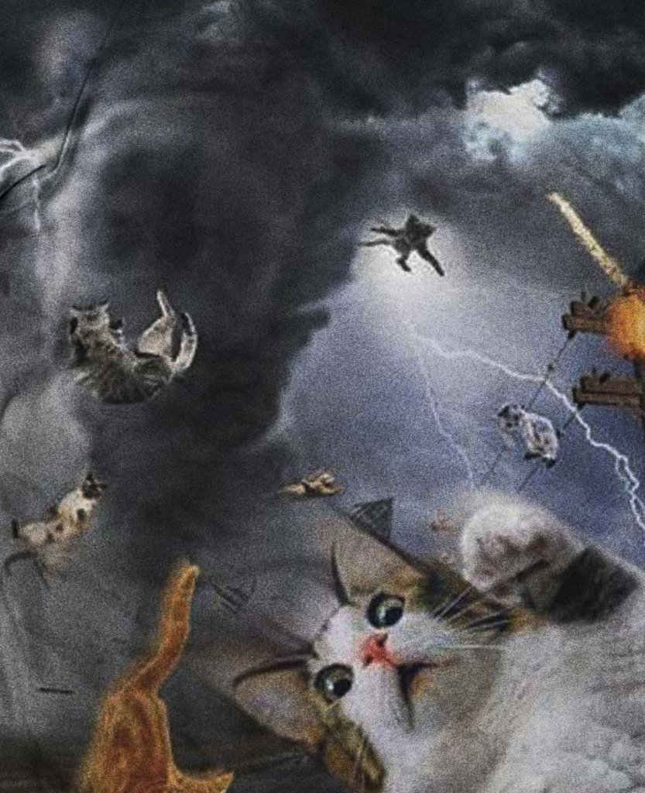
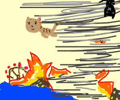
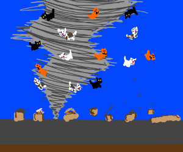
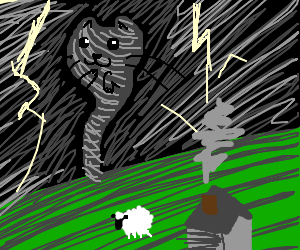
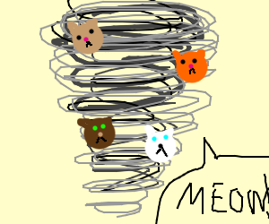

Tornados
Um tornado é um fenômeno meteorológico muito perigoso, ainda mais perigoso quando causado por simples animais fofinhos
Cientitas registraram ondas sonoras fraquíssimas sendo emitidas por um tornado, com uma frequência semelhante à frequência do miado de um gato.

Veja no vídeo abaixo o tornado estudado pelos cientistas:
Crianças com alta sensibilidade fizeram desenhos que comprovam que elas reconheceram os gatos tornados:
